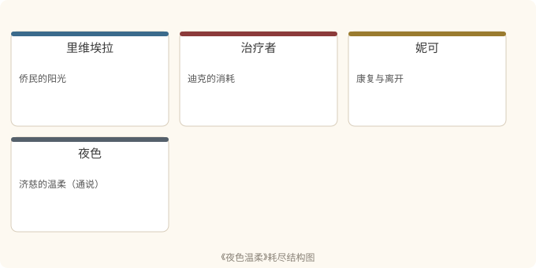

夜色温柔
一、基本信息
| 作者 | 菲茨杰拉德 |
|---|---|
| 成书/出版 | 1934年（作者页 B050/B023 口径：夜色温柔（1934）） F. Scott Fitzgerald — Encyclopaedia Britannica (by Arthur Mizener)（百科全书） |
| 国别/地区 | 美国 |
| 时代 | 现当代 · 20世纪 |
| 体裁 | 长篇小说 |
| 语言 | 英语 |

《夜色温柔》耗尽结构图（主题·结构图）
二、创作背景
作者页（B050/B023）：菲茨杰拉德 major_works 载'夜色温柔（1934）'（作者页定位，详见 gaicibi 条核对）。
书名（通说待核）：出自济慈《夜莺颂》（'tender is the night'）。
题材（通说待核）：精神病医生迪克·戴弗与病人妮可的婚姻——里维埃拉的美国侨民世界。
三、内容脉络
迪克从治疗者到被消耗者的滑落（通说待核）。
妮可的康复与'胜利'——婚姻的解体（通说待核）。
四、主要人物表
| 人物 | 身份 | 说明 |
|---|---|---|
| 迪克·戴弗 | 精神科医生 | 滑落的主角（通说待核） |
| 妮可 | 病人→妻子 | （通说待核） |
五、主题与艺术特点
- 美国梦的另一面：耗尽（通说）。
- 医生与病人的权力反转（通说待核）。
- 爵士时代的余晖（通说）。
六、影响与评论
- 作者页：菲茨杰拉德代表作（B050/B023 作者页口径）。
F. Scott Fitzgerald — Encyclopaedia Britannica (by Arthur Mizener)（百科全书） - 菲茨杰拉德自认的最佳小说（通说待核）。
F. Scott Fitzgerald — Encyclopaedia Britannica (by Arthur Mizener)（百科全书）
七、阅读建议
难点
- 非线性时序（前三部分）。
- 里维埃拉场景。
- 《夜色温柔》（上海译文出版社，通说待核）。
- 英文原版（公有领域渐近）。
先《了不起的盖茨比》后本作。
八、待核实
- 1934年出版（Scribner说）核对。
- 迪克/妮可人名核对。
- 济慈书名出处（《夜莺颂》）待核。
本页主要来源
- F. Scott Fitzgerald — Encyclopaedia Britannica (by Arthur Mizener)（百科全书）
- The Great Gatsby — Encyclopaedia Britannica（百科全书）
菲茨杰拉德的其他收录作品：了不起的盖茨比